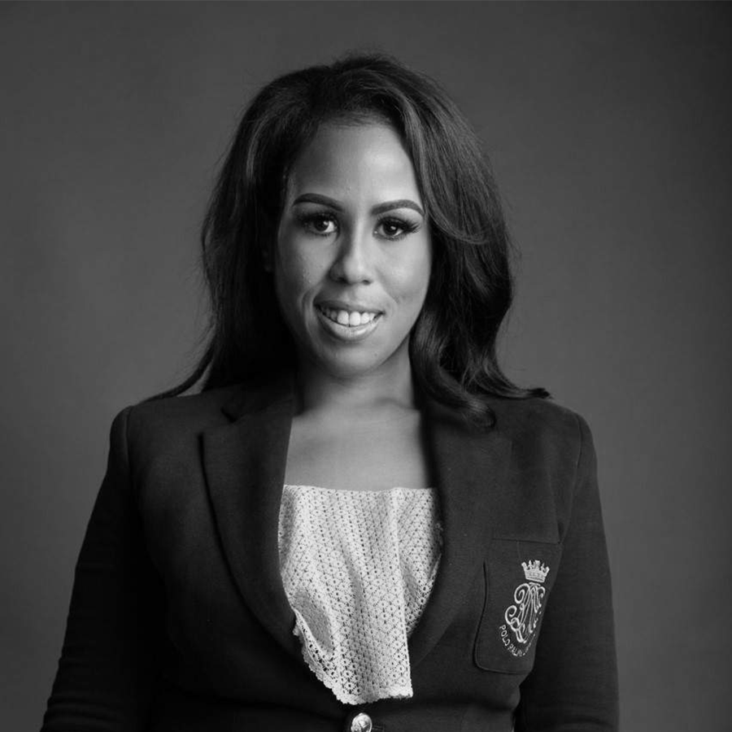
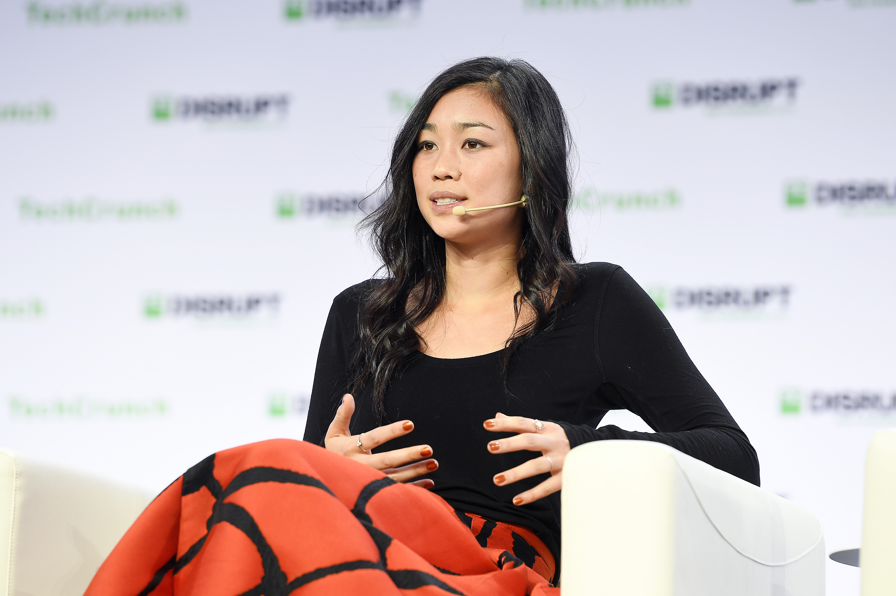

Angel Rich
Selected by Achamo Peterson

Angel Rich is an entrepreneur who has used technology to make financial education more accessible. She founded Wealth Factory, which uses technology and games to help people improve their financial literacy. She also founded Black Tech Matters, a nonprofit focused on making STEM fields more diverse and inclusive.
Intersectionality in Technology
Angel Rich's work connects to intersectionality because people's experiences with technology can be shaped by multiple parts of their identity, including race and gender Which closely relates to EricaJoy's reading #FFFFFF Diversity because, as a Black woman in technology, she represents the importance of intersectionality and recognizing Black women who are often overlooked in their work field.
Why I Chose Angel Rich
We chose Angel Rich because her work shows how technology can be used to help solve problems outside of the technology industry. Through Wealth Factory, she has used technology to make financial education more accessible. Her work with Black Tech Matters also focuses on making STEM more diverse and inclusive. We think this makes her a good example of someone who is using technology while also challenging inequalities that exist within the tech field.
Useful Links
Tracy Chou
Selected by Arthur Ou

Photo by TechCrunch, Wikimedia Commons (CC BY 2.0)

Tracy Chou is a Taiwanese-American software engineer who studied electrical enginnering and computer science at Stanford University. She has worked in the technology industry and has been an advocate for making the field more diverse and inclusive.
In 2013, she wrote an article called "Where are the numbers?" asking technology companies to share data about how many women worked in engineering. She believed that companies needed real numbers to understand whether their diversity efforts were actually working. She also co-founded Project Include and later started Block Party, a company focused on helping people deal with online harassment.
Intersectionality in Technology
Tracy Chou's work connects to intersectionality because people can experience inequality in technology based on more than one part of their identity. For example, women in tech may face gender bais, but women of different racial backgrounds may not have the same experiences. Her work shows why companies should look more carefully at who is included and whose experiences might be overlooked.
Why I Chose Tracy Chou
I chose Tracy Chou because she has a Taiwanese background, which I can relate to as a student from Taiwan studying in the United States. I am also interested in data and how companies use it to make decisions. I thought it was interesting how she used data to point out inequality in the technology industry and encouraged companies to become more transparent.
Useful Links About Tracy Chou
Tracy Chou - TaiwaneseAmerican.org